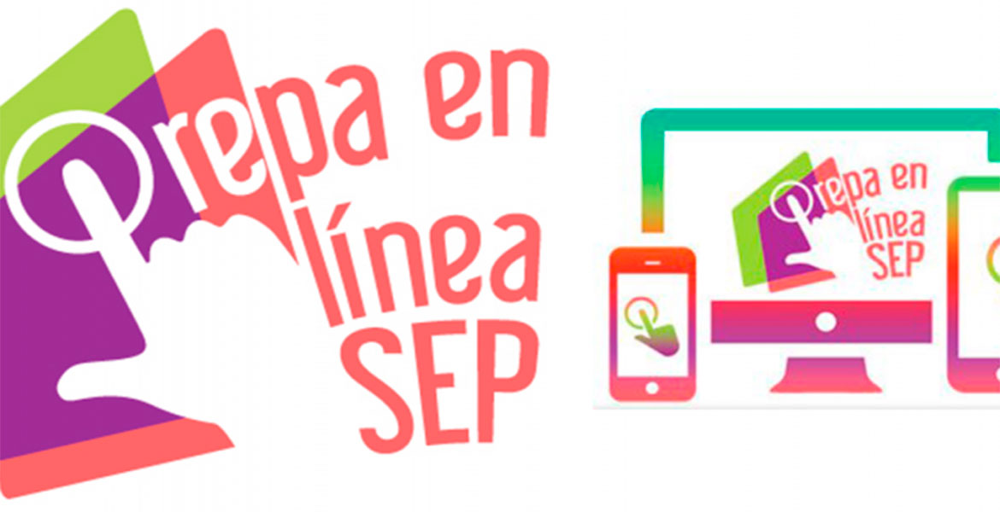

Hola, es un gusto que estén visitando esta pagina web. Este es solo un ejemplo de como hacer una pagina web con un video y contenido digital para presentar el proyecto del módulo 23. Gracias por su visita. Daniel Guillen 16168347